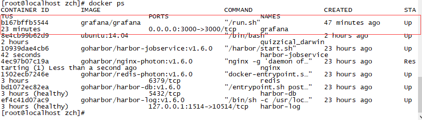

在docker上部署springcloud项目 https://www.jianshu.com/p/3f385c0a4af3
1.在linux上安装docker https://www.cnblogs.com/qgc1995/archive/2018/08/29/9553572.html
打包springcloud项目的时候需要到父工程下的lifecycle（lifecycle是maven中一个十分完善的生命周期模型，所以使用Lifecycle中的install项目就会自动去maven仓库下载需要的包）
下完成clean、compile、deploy的操作才可
uname -a 查看内核版本
yum update
yum install -y yum-utils device-mapper-persistent-data lvm2
yum-config-manager --add-repo https://download.docker.com/linux/centos/docker-ce.repo
yum list docker-ce --showduplicates | sort -r
yum install docker-ce-17.12.1.ce
systemctl start docker
systemctl enable docker
docker version
2.安装wget命令 yum -y install wget
c.centos安装maven3.0 https://www.cnblogs.com/jikexianfeng/p/8454644.html 注意下载地址需要到官网上找： http://maven.apache.org/download.cgi
3.docker安装prometheus和grafana
a.下载镜像包
docker pull prom/node-exporter
docker pull prom/prometheus
docker pull grafana/grafana
b.启动node exporter（这个是监听机器的服务）
docker run -d -p 9100:9100 \
-v "/proc:/host/proc:ro" \
-v "/sys:/host/sys:ro" \
-v "/:/rootfs:ro" \
--net="host" \
prom/node-exporter
查看服务是否正常启动curl http://localhost:9100/metrics
如果在prometheus中发现此服务不能连接，请关闭防火墙再试
iptables -F
c.查看端口是否已经启动
netstat -anpt
d.新建目录prometheus，编辑配置文件prometheus.yml
mkdir /opt/prometheus
cd /opt/prometheus/
vim prometheus.yml
e.启动prometheus
docker run -d \
-p 9090:9090 \
-v /opt/prometheus/prometheus.yml:/etc/prometheus/prometheus.yml \
prom/prometheus
访问prometheus服务
http://192.168.91.132:9090/targets
f.启动grafana
新建空文件夹grafana-storage，用来存储数据
mkdir /opt/grafana-storage
设置权限
chmod 777 -R /opt/grafana-storage
因为grafana用户会在这个目录写入文件，直接设置777，比较简单粗暴！
启动grafana
docker run -d \
-p 3000:3000 \
--name=grafana \
-v /opt/grafana-storage:/var/lib/grafana \
-v /opt/grafana-public:/usr/share/grafana/public \
-v /opt/grafana-conf:/usr/share/grafana/conf \
grafana/grafana
-v的命令是将grafana的conf文件和前端public文件持久化到外部linux上
4.汉化grafana
下载我git上已经汉化好的源码在本地进行编译(需要先fork到自己工程中然后从自己工程中clone出来)
git clone git@github.com:137/grafana-chinese.git
执行脚本
npm install --global --production windows-build-tools
npm build
如果需要在自己windows电脑上运行执行npm install -g yarn ； yarn install ； yarn start
进入到linux服务器
查看grafana docker服务名称
docker ps 查看正在运行中的容器 docker ps -a 查看所有的
如果发现容器没有起来则通过docker ps -a查询出所有的如下：
然后再通过docker start grafana启动，停止则是docker stop grafana,移除容器则是docker rm grafana

进入docker容器
以管理员权限进入 的命令格式 docker exec -ti -u root 容器id（以上截图里的container id） /bin/bash 或者/bin/sh
如果要退出输入exit
进入到/usr/share/grafana会看到如下文件

接下来把public备份成public2然后从外部拷贝public进来
mv public public2
拷贝外部文件 docker cp /opt/zch/public grafana:/usr/share/grafana
然后重启docker服务
退出到linux中exit
docker stop grafana
docker start grafana
然后访问 http://192.168.19.130:3000/?orgId=1就发现已经汉化好了

5.邮件发送和报警功能设置需要先配置smtp邮件服务器
进入到docker修改grafana的default.ini的配置，如下【在此采用的qq邮箱作为服务器】：
[smtp]
enabled = true
password = tvpabplzhvfsbhbj
cert_file =
key_file =
skip_verify = false
from_name = zjiptv_grafana
ehlo_identity =
password【这个是qq邮箱中的smtp的授权码】
然后就是仪表板的界面配置了：
b.到dashboard仪表板中条件规则然后配置alert发送目的地以及信息即可，当数据满足此条件就会发送邮件到以上配置的通知频道中的地址了，
同时在alert rules也会产生一条报警
6.springcloud引入prometheus的依赖和相关配置
启动springcloud服务
7.修改linux系统中的prometheus.yml的配置地址为所起springcloud服务地址
8.grafana页面上进行相关的操作，设置数据源

配置prometheus地址

由于docker有映射端口问题所以直接选择Browser吧
导入仪表板

然后上传json文件即可（注意json中的datasource必须与你新建的一样，否则需要到仪表板上全部重新配置）

对于grafana具体细节的操作还请自行百度

9.打包容器为镜像到其它服务器部署
删除镜像
docker rmi c38a63d2bb56
查询镜像
docker images
将镜像生产文件（参数是容器id）
docker export 5c8e5db9c3c7> update.tar
导入镜像
docker load <update.tar
从宿主机拷文件到容器里面
答：在宿主机里面执行如下命令
docker cp 要拷贝的文件路径 容器名：要拷贝到容器里面对应的路径
示例：假设容器名为testtomcat,现在要将宿主机/opt/test.js文件拷贝到容器里面的/usr/local/tomcat/webapps/test/js路径下面，那么命令该怎么写呢？
答案：在宿主机上面执行如下命令
docker cp /opt/zch/public.rar grafana:/usr/share/grafana
从容器里面拷文件到宿主机？
答：在宿主机里面执行以下命令
docker cp 容器名：要拷贝的文件在容器里面的路径 要拷贝到宿主机的相应路径
示例： 假设容器名为testtomcat,要从容器里面拷贝的文件路为：/usr/local/tomcat/webapps/test/js/test.js, 现在要将test.js从容器里面拷到宿主机的/opt路径下面，那么命令应该怎么写呢？
答案：在宿主机上面执行命令
docker cp grafana:/usr/share/grafana/public /opt/zch
端口有9100 9090 3000